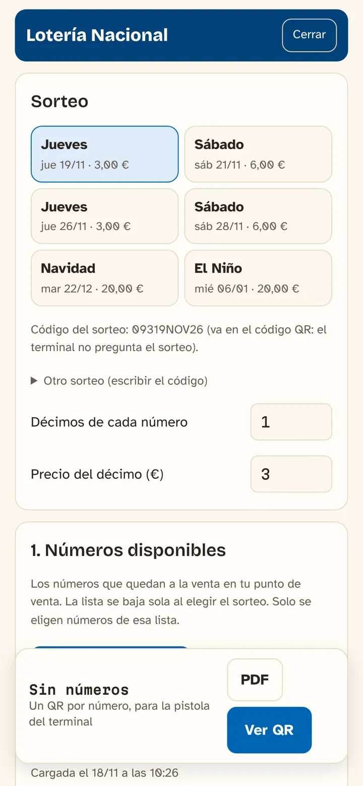
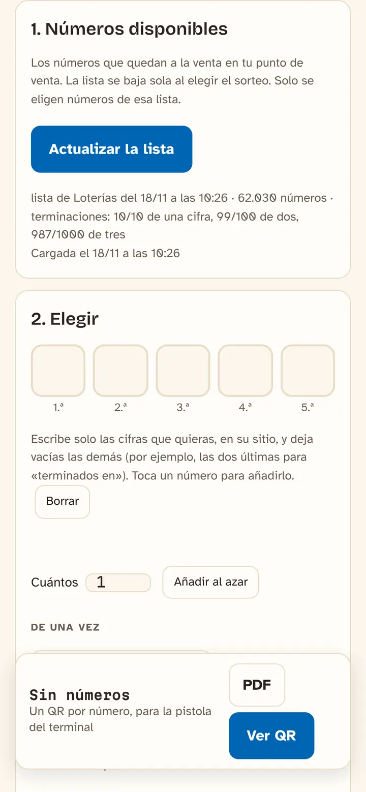
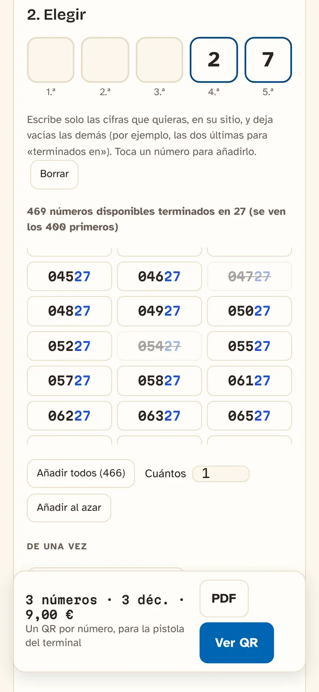
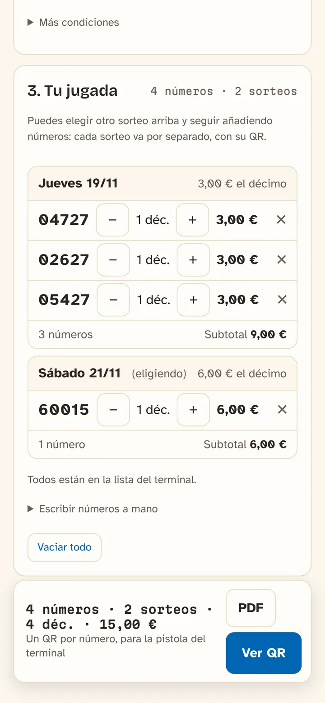
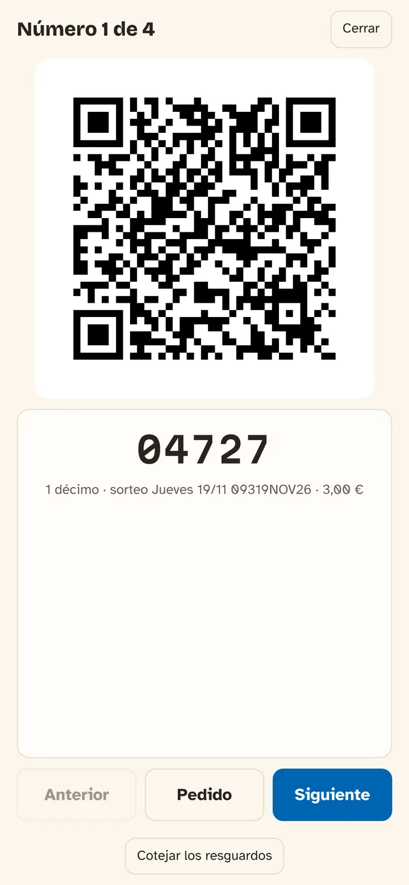
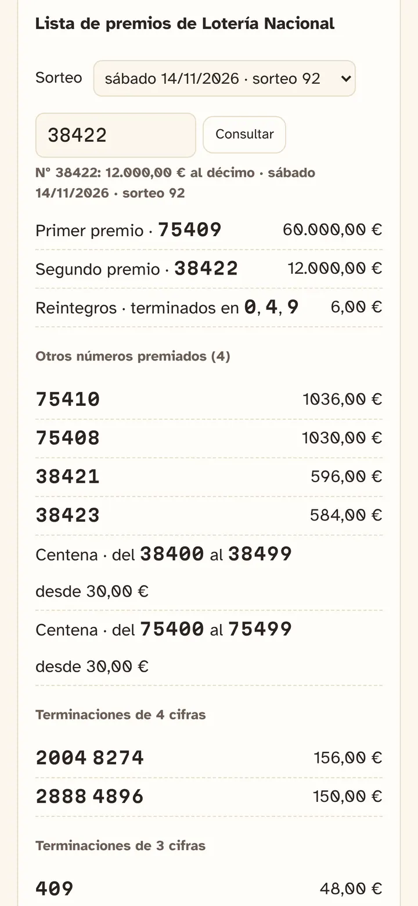

Lotería Nacional
App independiente. Combinario no es oficial ni tiene relación con Loterías y Apuestas del Estado (SELAE). No vende apuestas: solo te ayuda a prepararlas, y se validan y se pagan en un punto de venta. Solo para mayores de 18 años.
En la app se llama CombiLotte. Eliges el sorteo, buscas tus números entre los que quedan a la venta y la app te da un QR por número para el terminal.
1. Elige el sorteo
Salen los sorteos a la venta (jueves, sábados y extraordinarios como Navidad o El Niño), con su fecha y el precio del décimo. Al elegir uno, la app pone sola su código de sorteo, que va dentro del QR. Cada sorteo desaparece de la lista cuando cierra su venta.


2. La lista de números disponibles
Al elegir el sorteo se baja sola la lista de números que quedan a la venta. Es la lista pública de Loterías, la misma para todos los puntos de venta. Solo se pueden elegir números de esa lista. «Actualizar la lista» la vuelve a bajar.
3. Busca con las casillas
Hay 5 casillas, una por cifra, como en la web de Loterías. Escribe solo las cifras que quieras, en su sitio, y deja vacías las demás. Por ejemplo, un 2 y un 7 en las dos últimas para buscar los «terminados en 27». Al momento salen los números disponibles; toca uno para añadirlo.
- Añadir todos o Añadir al azar (dices cuántos).
- De una vez: uno de cada terminación, 100 terminaciones, 100 óptimas o capicúas.
- Más condiciones: empieza por, suma de cifras, sin cifras repetidas o con al menos N décimos.

4. Tu jugada, con varios sorteos
Cada número lleva sus décimos: cámbialos con − y +, o pon los mismos para todos en «Décimos de cada número». Puedes elegir otro sorteo arriba y seguir añadiendo números: cada sorteo va por separado, con su subtotal y sus QR.
Si un número deja de estar a la venta, sale en rojo y tachado: pulsa «Quitar los no disponibles». Un número que no está en la lista, o un sorteo que ya no está a la venta, no saca QR, y la app lo avisa.


5. Ver QR
Pulsa «Ver QR». En el mostrador leen cada QR con la pistola del terminal. Más detalles en Llevar tu jugada al punto de venta.
Premios
En Escanear › «Lista de premios de Lotería Nacional» eliges un sorteo de los últimos 3 meses y ves el primer y el segundo premio, reintegros, otros números premiados, centenas y terminaciones, con lo que cobra cada décimo. Escribe un número y pulsa «Consultar». También puedes escanear el código de barras del décimo (ver Comprobar premios).
